Programming Interactivity · after hours
The Web
Pub Quiz
7 rounds · about an hour · one winner
Before we start
House rules
- Teams of 3 to 5. Give your team a name and write it on the sheet.
- Phones and laptops stay closed. Your brain is the only runtime.
- One point per answer. Closest guess questions: 2 points to the closest team.
- The quizmaster's answer is final, even when it's
undefined.
Spot the real logo
Round 1 · Question 1
Which one is the real CSS logo?
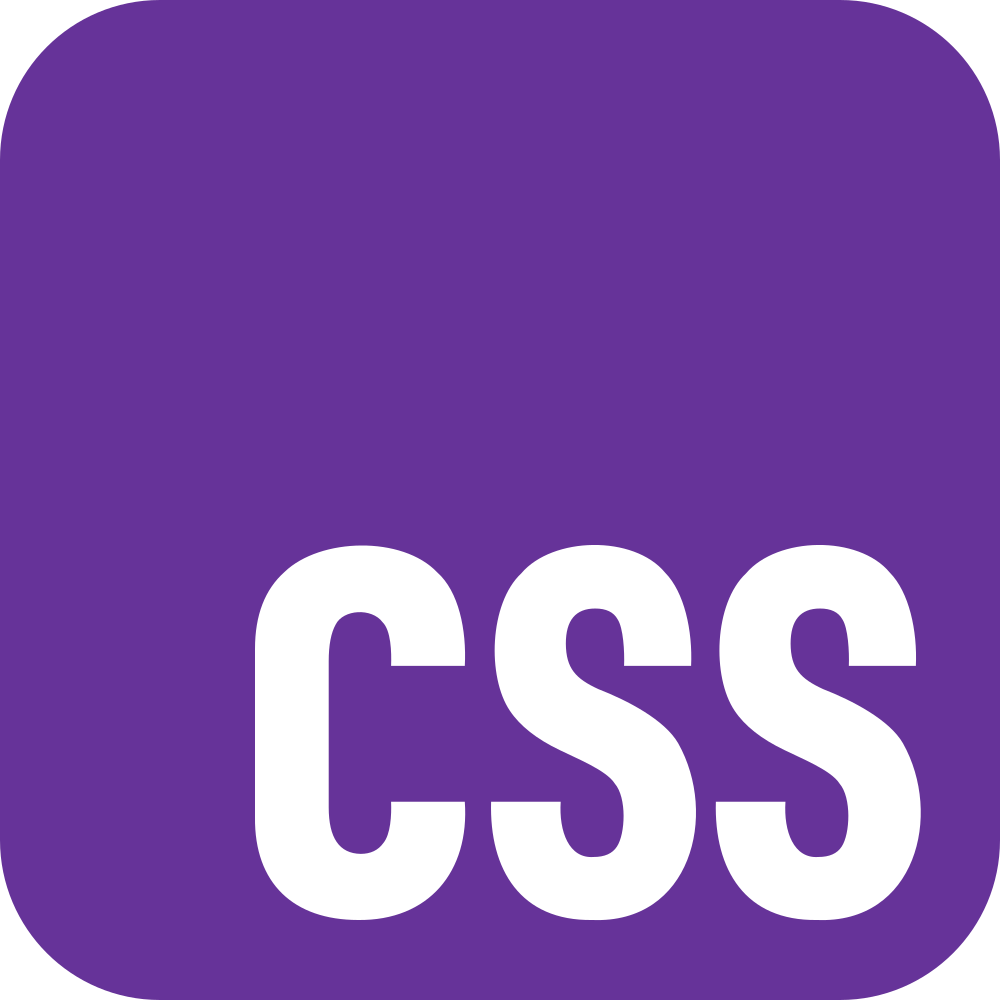
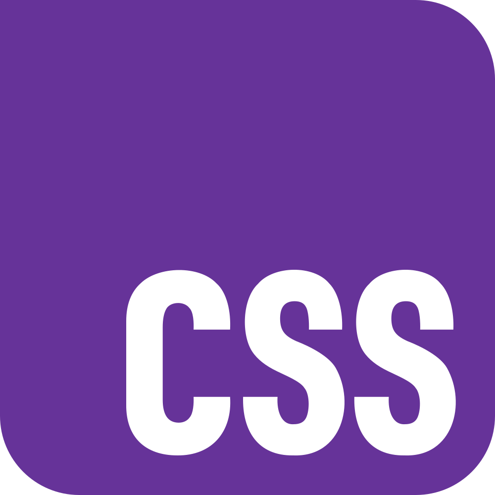
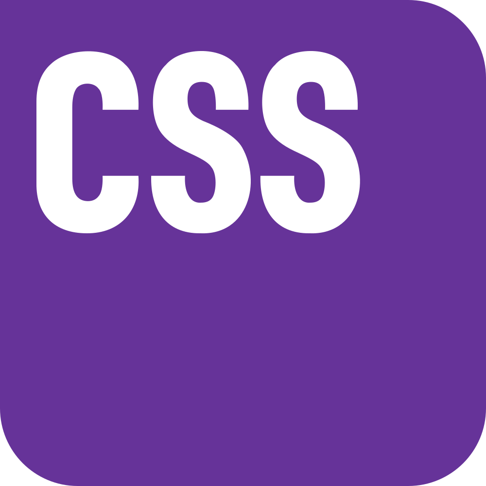
Round 1 · Question 2
Which one is the real JavaScript logo?
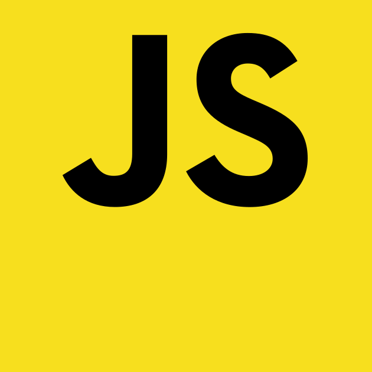
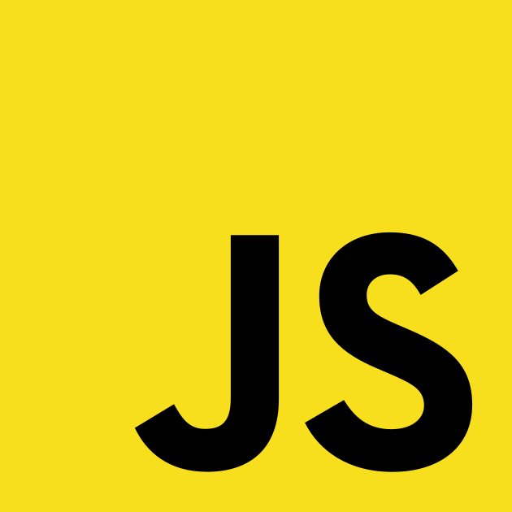
Round 1 · Question 3
Which one is the real HTML5 logo?
Round 1 · Question 4
Which one is the real Chrome logo?

Round 1 · Question 5
This one is real. But what animal is a “firefox”?

Round 1 · Spot the real logo
Pens down.
Answers.
Same questions again, with the answers.
Round 1 · Answer 1
Which one is the real CSS logo?
C. Picked by the community in 2023, in rebeccapurple, with one square corner. B, the blue shield, was the unofficial CSS3 logo.
Round 1 · Answer 2
Which one is the real JavaScript logo?
D. Square corners, black letters, bottom right. And nobody ever made it official.
Round 1 · Answer 3
Which one is the real HTML5 logo?
B. The shield has a point at the bottom, and the lighter half is on the right.
Round 1 · Answer 4
Which one is the real Chrome logo?
A. Red on top, yellow on the right, green on the left, and a white ring around the blue.
Round 1 · Answer 5
This one is real. But what animal is a “firefox”?
A red panda.“Firefox” is a nickname for the red panda. The logo draws a fox anyway.
Real or fake HTML tag?
Round 2 · Questions 1–10
Did this tag ever exist?
- <marquee>
- <sparkle>
- <blink>
- <plaintext>
- <xmp>
- <search>
- <shout>
- <spacer>
- <bdi>
- <glitter>
Round 2 · Real or fake tag
Pens down.
Answers.
Same questions again, with the answers.
Round 2 · Answers 1–10
Did this tag ever exist?
- <marquee>
- <sparkle>
- <blink>
- <plaintext>
- <xmp>
- <search>
- <shout>
- <spacer>
- <bdi>
- <glitter>
Three fakes: sparkle, shout, glitter. <search> is the newest: added in 2023.
Real CSS colour or ice cream flavour?
Round 3 · Questions 1–10
Is it a named CSS colour?
- papayawhip
- bananacream
- blanchedalmond
- mangotango
- peachpuff
- cornsilk
- salmonpink
- lavenderblush
- gainsboro
- burlywood
Round 3 · Question 11
One of these is gray, the other is darkgray. Which one is darkgray?
Round 3 · Question 12
What colour is this table cell?
<td bgcolor="chucknorris">
Round 3 · Question 13
This colour is called rebeccapurple. Who is Rebecca?
Round 3 · Colour or dessert
Pens down.
Answers.
Same questions again, with the answers.
Round 3 · Answers 1–10
Is it a named CSS colour?
- papayawhip
- bananacream
- blanchedalmond
- mangotango
- peachpuff
- cornsilk
- salmonpink
- lavenderblush
- gainsboro
- burlywood
Three fakes: bananacream, mangotango, salmonpink. Plain salmon is real.
Round 3 · Answer 11
One of these is gray, the other is darkgray. Which one is darkgray?
Round 3 · Answer 12
What colour is this table cell?
<td bgcolor="chucknorris">
| this cell, painted by your browser |
Round 3 · Answer 13
This colour is called rebeccapurple. Who is Rebecca?
Rebecca Meyer, daughter of CSS pioneer Eric Meyer. The colour was added in her memory in 2014, and it's the colour of the CSS logo from Round 1.
WAT
Round 4 · Question 1
What does this evaluate to?
"b" + "a" + +"a" + "a"
Round 4 · Question 2
What does this return?
[10, 1, 3].sort()
Round 4 · Question 3
What does this return?
Math.max()
Round 4 · Question 4
What does this return?
typeof NaN
Round 4 · Question 5
What does this evaluate to?
[] + {}
Round 4 · Question 6
True or false? One point for all three.
null >= 0 // ? null > 0 // ? null == 0 // ?
Round 4 · Question 7
One of these lines is valid JavaScript. Which one?
A const ಠ_ಠ = 1; B let 💩 = 1;
Round 4 · WAT
Pens down.
Answers.
Same questions again, with the answers.
Round 4 · Answer 1
What does this evaluate to?
"b" + "a" + +"a" + "a"
"baNaNa"Round 4 · Answer 2
What does this return?
[10, 1, 3].sort()
[1, 10, 3]Without a compare function, sort compares strings: "10" comes before "3".Round 4 · Answer 3
What does this return?
Math.max()
-InfinityIt starts from the smallest possible number and compares against each argument. With no arguments, nothing replaces it.Round 4 · Answer 4
What does this return?
typeof NaN
"number"“Not a Number” is a number. It's a value of the floating-point type.Round 4 · Answer 5
What does this evaluate to?
[] + {}
"[object Object]"+ turns both sides into strings: "" and "[object Object]".Round 4 · Answer 6
True or false? One point for all three.
null >= 0 // ? null > 0 // ? null == 0 // ?
true, false, false>= converts null to 0. == doesn't: null only equals undefined.Round 4 · Answer 7
One of these lines is valid JavaScript. Which one?
A const ಠ_ಠ = 1; B let 💩 = 1;
ಠ is a letter of the Kannada alphabet, so it can start a name. An emoji isn't a letter: SyntaxError.Real HTTP status or fake?
Round 5 · Questions 1–8
Could a server send this back?
- 418I'm a teapot
- 451Unavailable For Legal Reasons
- 299Probably Fine
- 420Enhance Your Calm
- 103Early Hints
- 404½Partially Found
- 226IM Used
- 499Too Many Tabs Open
Round 5 · Bonus
451 Unavailable For Legal Reasons is named after a book. Which book?
Round 5 · Status codes
Pens down.
Answers.
Same questions again, with the answers.
Round 5 · Answers 1–8
Could a server send this back?
- 418I'm a teapot
- 451Unavailable For Legal Reasons
- 299Probably Fine
- 420Enhance Your Calm
- 103Early Hints
- 404½Partially Found
- 226IM Used
- 499Too Many Tabs Open
Fakes: 299, 404½, 499. 420 was invented by Twitter: half a point either way.
Round 5 · Bonus
451 Unavailable For Legal Reasons is named after a book. Which book?
Fahrenheit 451Ray Bradbury, 1953: a society that burns books. 451 °F is the temperature at which paper burns, according to the book.
npm package or Pokémon?
Round 6 · Questions 1–12
Do you install it, or catch it?
- nodemon
- sudowoodo
- chokidar
- klink
- porygon
- rimraf
- yargs
- tynamo
- natu
- execa
- pino
- wynaut
Round 6 · Question 13
The npm package is-even checks whether a number is even. It depends on one other package. Which one?
Round 6 · Question 14 · closest guess
In 2016, one developer deleted left-pad from npm, and builds broke all over the internet. How many lines of code was it?
Round 6 · Question 15
mocha is a test runner on npm. What else in this quiz was once called Mocha?
Round 6 · Question 16
In 2018, a stranger took over the popular package event-stream and hid malicious code in it. What was it trying to steal?
Round 6 · Question 17
In 2022, the author of colors broke his own package on purpose. Apps that updated printed one word, forever. Which word?
Round 6 · npm or Pokémon
Pens down.
Answers.
Same questions again, with the answers.
Round 6 · Answers 1–12
Do you install it, or catch it?
- nodemon
- sudowoodo
- chokidar
- klink
- porygon
- rimraf
- yargs
- tynamo
- natu
- execa
- pino
- wynaut
Six of each. The scariest-sounding ones are npm.
Round 6 · Answer 13
The npm package is-even checks whether a number is even. It depends on one other package. Which one?
is-oddIts whole code is return !isOdd(i). People install it.Round 6 · Answer 14 · closest guess
In 2016, one developer deleted left-pad from npm, and builds broke all over the internet. How many lines of code was it?
Round 6 · Answer 15
mocha is a test runner on npm. What else in this quiz was once called Mocha?
Round 6 · Answer 16
In 2018, a stranger took over the popular package event-stream and hid malicious code in it. What was it trying to steal?
Round 6 · Answer 17
In 2022, the author of colors broke his own package on purpose. Apps that updated printed one word, forever. Which word?
LIBERTY LIBERTY LIBERTYFollowed by garbled text, in an endless loop. A protest against big companies using free code without paying.Name that site from its boxes
Round 7 · Question 1
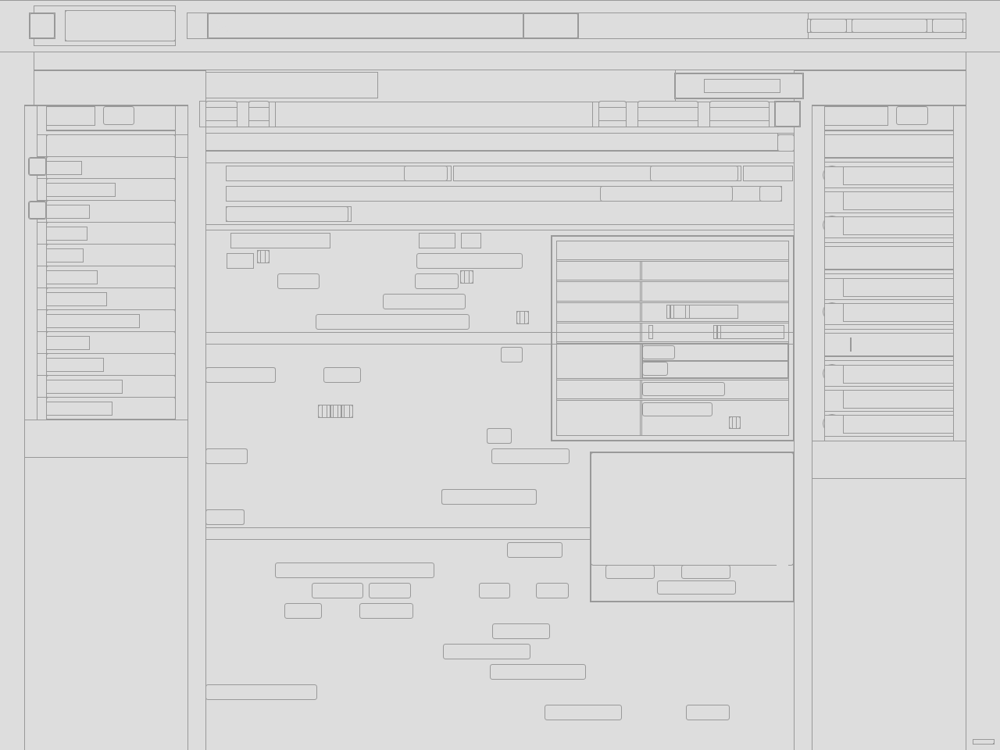
Which site?
Round 7 · Question 2
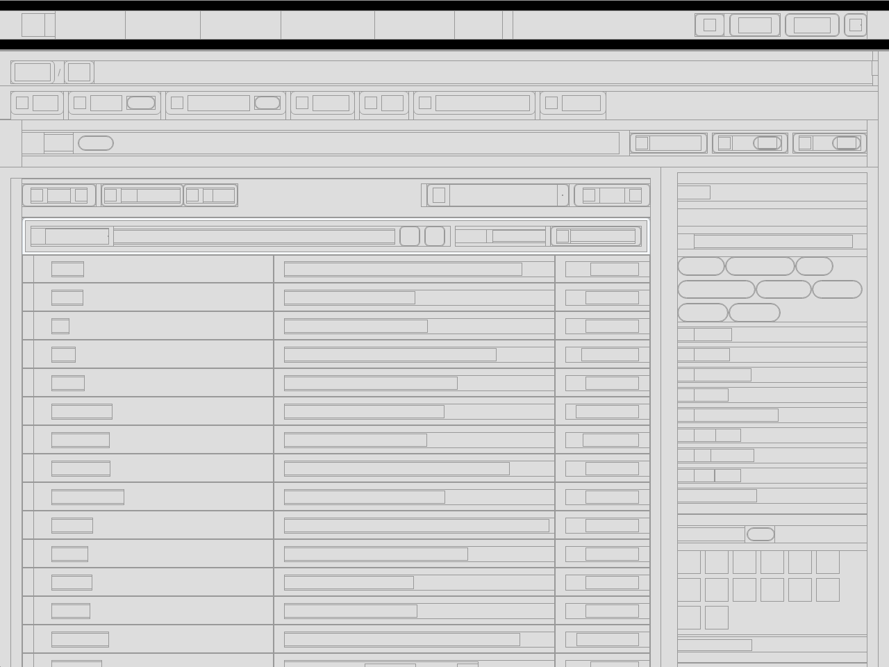
Which site?
Round 7 · Question 3
Which site?
Round 7 · Question 4
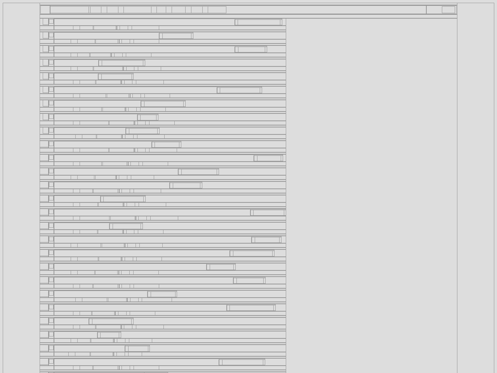
Which site?
Round 7 · Question 5 · closest guess
How many elements are on Wikipedia's article about the World Wide Web?
document.querySelectorAll("*").length
Round 7 · Name that site
Pens down.
Answers.
Same questions again, with the answers.
Round 7 · Answer 1
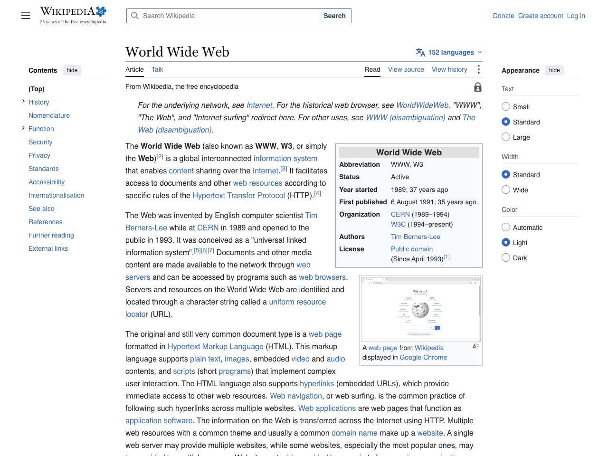
Which site?
WikipediaAn article page.
Round 7 · Answer 2
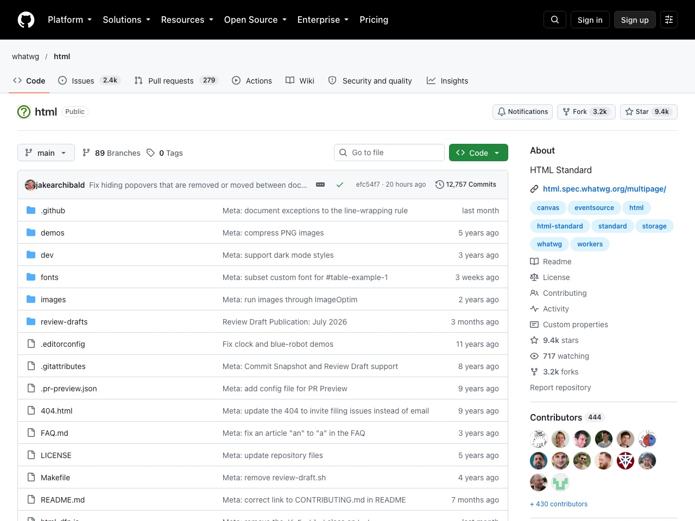
Which site?
GitHubA repository page.
Round 7 · Answer 3
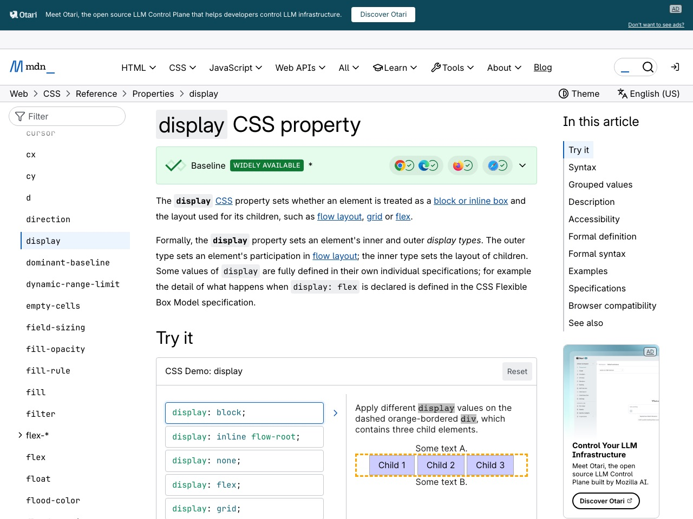
Which site?
MDNA reference page.
Round 7 · Answer 4
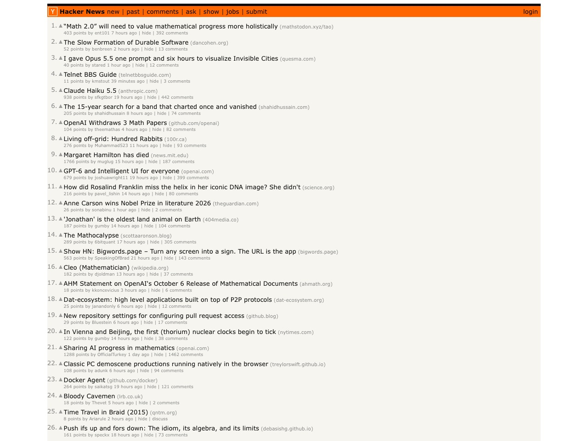
Which site?
Hacker NewsThe front page.
Round 7 · Answer 5 · closest guess
How many elements are on Wikipedia's article about the World Wide Web?
document.querySelectorAll("*").length
Tiebreaker · closest guess
What's the largest z-index a browser will honour? Anything above it is treated as this number.
2147483647231 − 1: the largest signed 32-bit integer. Someone has always tried z-index: 99999999999.Programming Interactivity · after hours
And the winner
is…
Thanks for playing.